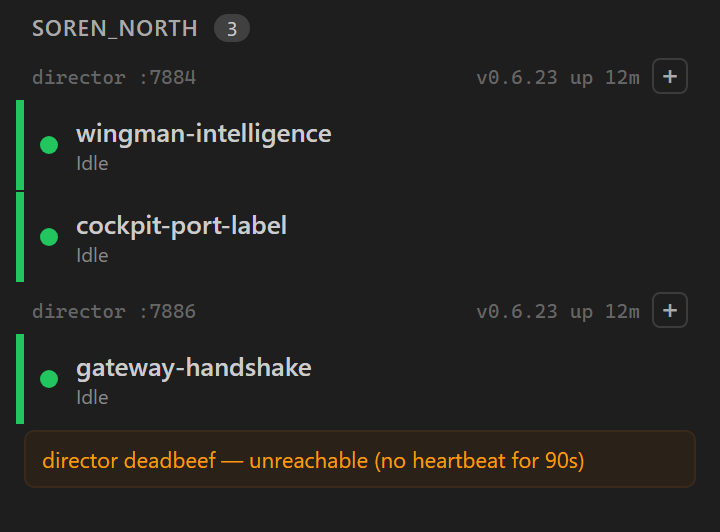
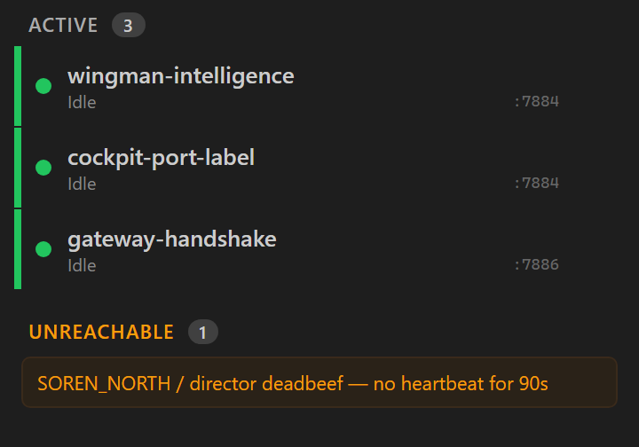
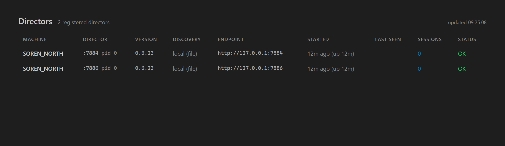

Each Director in the Cockpit session rail (and on the Directors / Director-detail pages) is now
labelled by its port - e.g. director :7884 - instead of the meaningless
8-hex-char per-process Director GUID prefix (e.g. director a3a971fa). The port is short,
stable across Director restarts, and maps directly to the slot convention (7879 = main build;
7884/7886/7887... for slots), so the rail is now readable and Directors are easy to tell apart. The
full DirectorId is preserved everywhere it was shown (now in a tooltip / detail body) and
remains the routing key for every navigation.
src/CcDirector.Cockpit/Components/SessionRail.razor - added a shared
PortOf(endpoint) / PortOf(DirectorDto) helper plus
PortLabelFor(directorId) (registry lookup with GUID-prefix fallback). The Director
group header, the per-session sess-dir span (triage view), and both unreachable
rows (tree + triage) now render :<port>; the full GUID moved to the
title tooltip.src/CcDirector.Cockpit/Components/Pages/Directors.razor - the Director cell leads
with :<port> via a self-contained PortLabel(d) helper; the full
GUID stays in the cell title.src/CcDirector.Cockpit/Components/Pages/DirectorDetail.razor - the header leads with
:<port>; the full GUID stays in the header tooltip and the Registration body
(Director id row, unchanged).src/CcDirector.Cockpit.Tests/SessionRailPortLabelTests.cs - 8 bUnit tests rendering
the real compiled components (added the bunit package to the test project).No change to CcDirector.Gateway.Contracts DTOs, the Director Control API, or the
Gateway aggregation routes. The port is derived from existing fields. Display-only change.
dotnet build cc-director.sln -> Build succeeded, 0 Warning(s), 0 Error(s).dotnet test src/CcDirector.Cockpit.Tests -> 24 passed (8 new + 16 existing).
The new tests render the genuine SessionRail and Directors components against
controlled DTOs and assert the exact rendered markup (the same HTML the browser receives).scripts\agent-session-isolation.ps1), built from this branch in its own worktree,
registered to the Gateway, and torn down after capture (slot 8 freed, worktree removed). The
visual artifacts below are the rendered output of the components compiled from this branch.| Criterion | Expected | Actual (proof) |
|---|---|---|
Rail tree header shows director :<port>, two Directors with distinct ports, no hex prefix |
director :7884 and director :7886, version/uptime intact |
MET - rail-tree-ports.png; TreeHeader_RendersPortLabel_NotGuidPrefix |
| Header no longer shows the 8-char GUID prefix as its primary label | No hex prefix in the header text | MET - test asserts DoesNotContain("a3a971fa"/"b7c44ee0") |
Triage per-session sess-dir span shows :<port> (resolved via the Directors registry) |
:7884 / :7886 per session |
MET - rail-triage-ports.png; TriageSessionSpan_ShowsPort_ResolvedFromRegistry |
Unreachable rows (tree + triage) show :<port> when resolvable, GUID-prefix fallback otherwise (no silent blank) |
Port when in registry; GUID prefix when the Director is gone | MET - both screenshots show director deadbeef fallback; UnreachableRow_ShowsPort_WhenDirectorStillInRegistry + UnreachableRow_FallsBackToGuidPrefix_WhenDirectorGoneFromRegistry |
Full DirectorId stays visible (rail header tooltip; Directors / DirectorDetail expose it) |
Full GUID in title and detail body |
MET - TreeHeader_CarriesFullGuid_InTitleTooltip; Directors cell title = full GUID; DirectorDetail Registration body shows Director id |
Directors page row leads with the port, full GUID in cell title |
:7884 / :7886 leading, GUID tooltip |
MET - directors-page-ports.png; DirectorsPage_RowLeadsWithPort_FullGuidInCellTitle |
[+] new-session and Director-open still navigate by full DirectorId |
Routing unchanged - uses full GUID | MET - OnNewSession.InvokeAsync(dir.Key), Open(d) and the session-filter links all still pass the full DirectorId; only the displayed label changed |
dotnet build cc-director.sln succeeds, no new Cockpit warnings |
0 warnings, 0 errors | MET - Build succeeded, 0 Warning(s), 0 Error(s) |
Rail tree view - SOREN_NORTH with two Directors, headers director :7884
and director :7886 (distinct ports, no GUID prefix), version/uptime and [+] intact,
and an unreachable row falling back to director deadbeef:

Rail triage view - the per-session sess-dir spans show :7884 /
:7886 (registry-resolved), and the unreachable row shows the GUID-prefix fallback
director deadbeef:

Directors page - the Director column leads with :7884 / :7886
(the full GUID is in the cell tooltip):

The raw rendered component HTML is also committed as rail-rendered.html and
rail-rendered-triage.html (the genuine markup the browser receives, captured directly from
the compiled SessionRail component).
No drift. No container boundary, contract DTO, Control API, or Gateway route changed - this is a
display-only change inside the cockpit container (CcDirector.Cockpit). No
blocking security rule (DT-*) is affected. The full DirectorId remains the routing/identity
key everywhere.